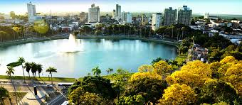

-
Este tema não apenas reflete a interconexão entre as comunidades rurais e urbanas, mas também destaca os desafios e oportunidades que surgem dessa relação.A medida que o mundo enfrenta transformações sociais, econômicas e ambientais significativas, compreender e fortalecer os laços entre o campo e a cidade torna-se crucial para o desenvolvimento sustentável e a construção
Para entrar na faculdade.
Tenho um ano para realizar
-
Pretendo melhorar como pessoa, no convivio social, me tornando alguém mais fácil de conviver e menos chorona.
Farei isso em pelo menos seis meses.
-
Fazer um curso profissionalante na área da saúde
Concluirei essa meta em 3 anos.